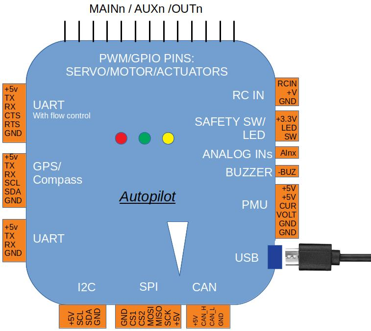

常见的飞控接线¶
{kind=link}
本章节介绍飞控的基本/必要外围设备的接线/连接。有关每个飞控端口/连接器的详细说明，请参阅 飞控输入和输出
GPS/指南针(罗盘)¶
GPS通常在所有车辆中都是必要的，除非使用其他位置确定传感器或系统。 Copter和Rover以及QuadPlane类型的飞机通常也需要指南针（请参阅指南针替代品的无指南针操作），但传统飞机不需要指南针，但建议使用指南针。
提示
一些Copter和Rover模式可以在没有GPS和指南针的情况下运行（有关其飞行模式，请参阅车辆文档）。
系统中可以使用多个GPS和/或指南针，请参阅 GPS混合（也称为双GPS）, 高级指南针设置，和 EKF3 Affinity and Lane Switching 以了解更多信息

提示
从飞控到GPS模块的TX和RX是交换接的。
提示
通常在飞控中，GPS默认连接到串口3。然而，哪个物理UART被分配给飞控上的ArduPilot串口3在飞控文档中有记录
提示
重要的是，将GPS连接到其SERIALx_PROTOCOL参数设置为“5”（GPS）的第一个SERIALx端口，因为如果在为GPS协议配置的第一个端口上找不到GPS，它将在引导期间停止搜索GPS。
作为接线示例，章节3DR UBlox GPS+指南针模块展示了如何连接到Pixhawk自动驾驶仪，并包括其他配置和安装信息。
RC输入¶
无线电控制(RC)接收机通常用于遥控器控制。虽然使用遥测技术通过地面站进行单独控制是可能的，但不建议这样做。也可以使用手柄通过地面站软件控制载具。请参阅手柄.

ArduPilot自动检测以下串行RC接收器协议：
PPM远程控制（R/C）接收机
SBus接收机
FPort接收机 (请参阅 FPort接收机 )
Crossfire (CRSF) 接收机 (请参阅 Team Black Sheep(黑羊) RC, Telem需要完整的UART连接)
Spektrum DSM 和 DSM2 接收机
Spektrum DSM-X Satellite 接收机
IBUS 接收机
MULTIPLEX SRXL 1和2 接收机
对于传统的每通道单线（PWM）接收机，可以使用PPM编码器将接收机输出转换为PPM。
提示
从ArduPilot 4.0版本的固件开始，通过将端口的
SERIALx_PROTOCOL
设置为23，任何UART都可以用作RC接收器的输入，而不是指定的RCin或SBUS输入引脚。然而，一些串行协议需要反转（SBUS、FPort），并且UART必须能够使用
SERIALx_OPTIONS
参数来反转RX输入，否则，将需要外部逆变器。这也允许将第二RC接收机连接到飞控以进行冗余。如果第一个接收机（引导后第一个检测到有效）失败，则将使用第二个接收器。请注意，无论校准了什么RC输入范围和微调，都将在第二次激活时使用。两个接收机都必须设置为在故障保护中不发送脉冲，才能正常工作。还必须设置
RC_OPTIONS 第10位。

FRSky睿思凯Taranis遥控器¶
电机/电调的连接¶
电机电调 和/或 PWM舵机连接到飞控的PWM输出。
它们被标记为MAIN/AUX输出或仅被标记为OUTPUT。这些输出为飞行层面的电机ESC或舵机控制提供PWM或Dshot信号。它们有时也可用作控制继电器、降落伞、夹具等的通用I/O引脚。
那些带有MAIN/AUX输出标签的控制器通常表示正在使用IOMCU协处理器。这些输出旨在用作电机/舵机输出，并在主飞控出现故障时通过RC提供冗余控制方式。MAIN输出来自该协处理器，而AUX指定输出则直接由飞控控制。大多数板级飞控不使用IOMCU，其输出仅标记为OUTPUTx或Mx。
这种区别很重要，因为AUX输出（以及来自没有IOMCU的飞控的OUTPUT）可以用作GPIO以及PWM或Dshot。而MAIN输出只能用于PWM。
提示
一些不使用IOMCU的飞控将其输出标记为MAIN，因此实际上可以用作GPIO和/或Dshot ESC控制输出。CUAV V5 Nano和Holybro Pixhawk 4 Mini就是例子。
通常除了单独的输出信号外，这些输出还提供在3针连接器带上，用于提供或分配舵机电源和接地。该电源通常由外部提供，如ESC或BEC，尽管一些飞控从内部调节器提供该电源。
Rover的连接示例

Copter仅使用电机的示例。在这种情况下，只连接ESC信号线。

有关Copter，请参阅连接电调和电机.
对于Copter按电机编号将PDB的每条信号线连接到主输出信号（S）引脚：
Output 1 = Motor 1 - - Output 5 = Motor 5
Output 2 = Motor 2 - - Output 6 = Motor 6
Output 3 = Motor 3 - - Output 7 = Motor 7
Output 4 = Motor 4 - - Output 8 = Motor 8
对于Plane，将控制通道线连接到主输出信号引脚：
Output 1 = Aileron(副翼)
Output 2 = Elevator(升降舵)
Output 3 = Throttle(油门)
Output 4 = Rudder(方向舵)
对于Rover，将油门和转向线连接到主输出信号引脚。默认设置为：
Output 3 = Throttle(油门)
Output 1 = Steering(转向)
skid-steer输出功能参数用于配置具有固定车轮和类似坦克履带的转向车辆（即不使用舵机来转向车轮，而是使用左右轮之间的差速）。使用
Throttle Left和
ThrottleRight
输出功能设置用于每侧电机的输出的SERVOx_FUNCTION。请参阅
Rover电机功能
连接蜂鸣器和安全开关¶
蜂鸣器和安全开关按钮是可选的，但对某些配置很有用。并非所有的飞控都提供这些连接。蜂鸣器和开关可以连接到它们各自的端口，如图所示。

警告
将蜂鸣器安装在距离飞行控制器至少5厘米的地方，否则噪音可能会干扰加速度计。
连接其他外围设备¶
根据您的硬件，可能会连接任何数量的其他外围设备，包括传感器、摄像头、夹具等。这些可以在可选硬件章节的子页找到。
有关将这些外围设备连接到飞控的信息可在相应的页面中找到。